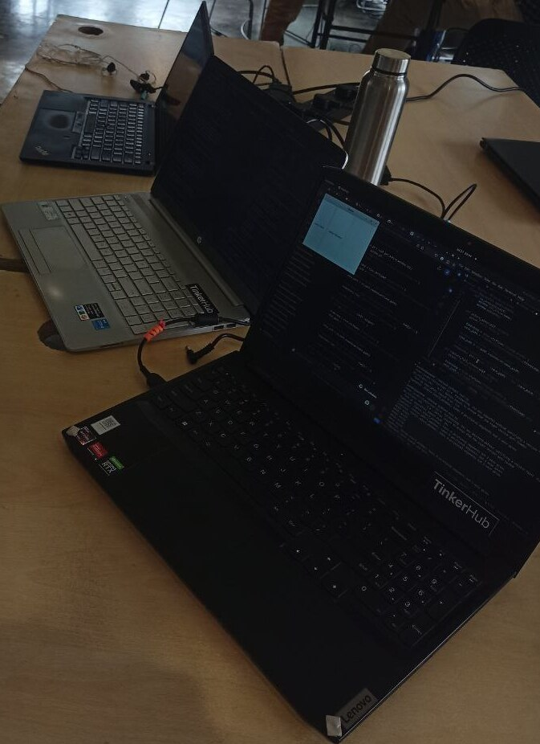

My First Hackathon
Attending My First Hackathon: FOSS Hack 2024 in Bangalore.

Recently, I attended my first hackathon, “FOSSHack,” in Bangalore. My two friends and I decided to participate in this hackathon about 2–3 months ago, but we hadn’t decided what we were going to build. When only one month remained until the hackathon, we finally decided to make an app for Linux that would provide backgrounds for images or screenshots, either gradient or solid colors. This app was intended as an alternative to the CleanShot X app for macOS. We were both excited and confused. Confused? About what? The confusion was about where to start. We chose Python as our language and GTK for the UI, and we began learning the basics of GTK and PyGObject.
A Day Before the Hackathon
After learning just the basics of GTK, we headed to the hackathon. I remember a meme that says, “Me and my friends attending a hackathon, who only know HTML.” At that moment, I felt the same, lmao. Since it was the first time for Jacob and me in Bangalore, we visited Cubbon Park and Church Street to pass the time, and we even bought a book from Blossom. Blossom was amazing — four floors filled with books! In our city, we don’t even have a single floor filled with books, and if there is one, it probably has books that aren’t even interesting to me. We stayed at Zostel that night, where we met a guy who works at HP as a developer. He started talking to us without even knowing our names. It was the first time I talked so freely with a stranger. We had a discussion about colleges, what real tech is, and he also guided us on why we should participate in events, hackathons, and travel as much as we can.
We also met a group of students who were preparing for a hackathon, I think the name was “Solona Hackathon” or something like that. They were final-year engineering students trying to build something related to Web3. We spent half an hour talking about tech, events, and much more; the time I spent at Zostel was really great.
Hackathon Day
The day finally arrived when we attended the hackathon at the Samagata Foundation office. We named our project “Chitra,” which means “picture” in most Indian languages. I took on the task of capturing the screenshot, while Jacob handled the UI component since he’s a good UI designer, and Mangesh worked on applying colorful or gradient backgrounds to the images. By evening, Jacob and I had finished our parts and spent some time playing Jenga with the other participants. I talked with everyone present and got to know their journeys in tech. Some participants were already working for companies, and hearing about their work experiences was really helpful.
And so, the first day ended. Mangesh was exhausted as he hadn’t slept the previous night due to his office work, so Jacob and I carried on with the project. At night, we figured out how to add backgrounds to the images. Let me tell you, this project wasn’t a hardcore one, but we tried our best to make it. The UI wasn’t that great, but the features were working. We read the GTK documentation, used Stack Overflow, and even consulted ChatGPT to figure out a few things. The code we wrote saved the modified image and determined the dominant color of the picture, which could be applied to the background. In the end, the hackathon concluded, and we completed about half of our project. We had planned to make an application manager, but since we had a return train to catch that evening, we left.
Takeaways
What I learned from this experience is that you don’t have to wait until you feel fully prepared to start a project. By starting the project, you learn everything along the way. Another important lesson was to communicate and meet as many people as you can. Each person has a different experience and a unique story of getting into tech, and these stories can be really motivating. Lastly, I learned that it’s important to try out whatever comes to mind. I realized that I’ve wasted a lot of time just thinking about what I should do, but I never actually worked on those ideas. I’m now trying to implement everything I learned from those three days in Bangalore.
That’s all for now. If you find anything in this blog that could be improved or if you have any takeaways, please feel free to DM me.